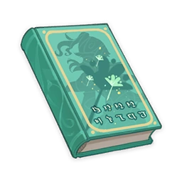

Mondstadt · Books & Literature
Biography of Gunnhildr
Modern historian Eckhard Gunnhildr’s family history gathers fragmented legends about the clan’s ancestor: an exile from Decarabian’s city, prayers answered by a wind spirit, and a later role in Mondstadt’s political upheaval. Its English rebellion passage is internally ambiguous, so the family chronicle needs to be read beside Venti’s account.

Book record and compiler
Biography of Gunnhildr is a Quest Item found inside Dawn Winery. The in-game description identifies its compiler as Eckhard Gunnhildr, a modern historian of Mondstadt, and says the book gathers fragmented stories and legends from the aristocratic period. It recounts the life of the clan’s ancestor, rather than presenting itself as an ancient document written by her.
The description’s emphasis on fragments and legend is important. The book preserves a later family account of old Mondstadt, so its claims about the family’s long-term character also reflect how the clan wishes to remember its past.
A clan leaves Decarabian’s city
The story opens with a legend set during conflict between Decarabian, Lord of the Tower, and Andrius, King of the North Wind. Gunnhildr’s father leads the clan and had once served Decarabian. He eventually rejects the ruler’s despotic rule and takes the clan out of the city, where they escape the tyrant but face brutal weather and blizzards.
The text’s first image of Gunnhildr is as the clan chief’s young daughter. Her father, not Gunnhildr, leads the initial departure. She becomes the clan’s leader only after his death.
The prayer and the wind spirit
When the refugees are close to despair, Gunnhildr prays and the people cry for help. The book describes their shared faith as a source of power for a spirit among the winds. The spirit creates a small shelter for the clan and gives Gunnhildr the power to protect it.
After her father dies, Gunnhildr takes his place as leader and becomes the clan’s first priestess. This sequence is narrower than the previous page suggested: the text describes shelter and protective power, not crops, a general period of prosperity, or Gunnhildr leading the clan from the city in her father’s place.
Barbatos and the unclear rebellion sentence
The later passage names Barbatos as the one who challenges Decarabian. In the English text, it then says Gunnhildr led her people to make a stand “against the Archon’s fury,” before describing Barbatos freeing the tyrant’s subjects and Gunnhildr decorating the victorious Anemo Archon with laurels. The immediate wording leaves it unclear whose fury the phrase means and can misleadingly suggest that Gunnhildr opposed Barbatos.
Venti’s character story and Story Quest give a clearer context for the wind spirit: around 2,600 years ago he was a tiny elemental being, not yet a god, and Decarabian ruled Old Mondstadt behind a hurricane. The book’s own next clause says Gunnhildr honored Barbatos after the liberation. Keep the English sentence’s ambiguity visible instead of using it as proof that she fought against the wind spirit.
The clan’s later history
After Barbatos departs, the book says aristocratic rulers emerge across the land and become corrupt over the following millennium. It places the Gunnhildr descendants within that aristocracy, but presents them as an exception: they supposedly keep a duty to protect Mondstadt, side with the people during the struggle against noble rule, and avoid the exile imposed on the rest of the aristocracy.
The final paragraph continues that favorable portrait, saying the present-day family supplies many Knights of Favonius and clergy. The book itself does not name Jean or Barbara; their individual family histories are separate sources.
Three thousand years and Venti’s account
The book dates the beginning of its legend to three thousand years ago. Venti’s Story Quest instead places the Old Mondstadt events he remembers at about 2,600 years ago, before the world came under the rule of the Seven. The game does not reconcile those two dates in the book or in the quest.
The safest summary keeps both attributions: this modern clan history opens with a legend framed as three thousand years old, while Venti supplies a separate, approximate date for his memories of Decarabian’s city. Do not turn the book’s opening date into a precise date for every event in its account.
A family history, not a neutral chronicle
Eckhard’s account praises the Gunnhildrs as protectors, contrasts them with the Lawrence Clan, explains why they escaped exile, and ends by predicting that the family will continue serving Mondstadt. Those are explicit parts of the book’s argument about its subject, not an independent assessment of every clan or aristocratic period.
Read the book as evidence for both the Gunnhildr family tradition and the later historian’s presentation of it. Its fragmented legends preserve details about the clan’s origin and public memory, while comparison with Venti’s story and Mondstadt’s other records helps separate that tradition from the wider historical frame.
What the book establishes and leaves open
The book says Gunnhildr’s father led the clan out of Decarabian’s city; a wind spirit answered the people’s prayer and empowered Gunnhildr; she became leader and priestess after her father’s death; and the descendants later supported Mondstadt’s people against the aristocracy. It attributes the account to modern historian Eckhard Gunnhildr and labels its source material fragmented stories and legends.
It does not give a fully consistent chronology, resolve the English wording about the rebellion, or provide a neutral history of every Mondstadt clan. Its claims should be paired with Venti’s character stories and the Story Quest rather than expanded into unsupported details about farming, the clan’s exact role in every battle, or the date of each event.
This is an original CoreGG reading guide, not an official HoYoverse article or a reproduction of the game text. Source links below identify the records used so you can check the original context.
Sources & references
Check these sources for the original game text and reference trail.
- Genshin Impact Books · English in-game text transcription
- Bilibili Genshin Wiki · Chinese book text and item metadata
- Genshin Impact Wiki · book description, item type, and location
- Venti · Character Stories 3–4 transcription
- Should You Be Trapped in a Windless Land · Venti’s Story Quest transcript
- HoYoverse · The Boy and the Whirlwind story teaser
- HoYoWiki · Venti character archive
- HoYoWiki · Books index
- HoYoverse · In-game Books Archive